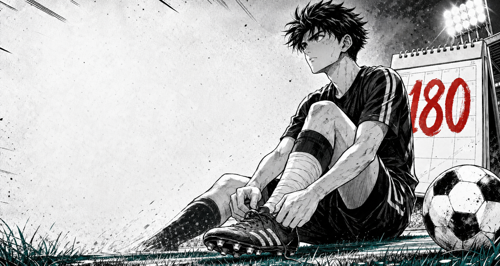

Umar ibn Saidjappar
Futbolga qaytishgacha
Oyoq jarohatidan keyingi 180 kunlik teskari hisob
Maydonga shoshmasdan, lekin to'xtamasdan qaytish uchun teskari hisob. Har kun tiklanish, har soat sabr, finalda yana futbol.
Tiklanish boshlangan sana
29.04.2026
Recovery arc
Bugungi tiklanish paneli
Birinchi sahifa ochildi. Sabr bilan tiklanish boshlandi.
"Bugungi ehtiyotkor qadam ertangi golga olib boradi."